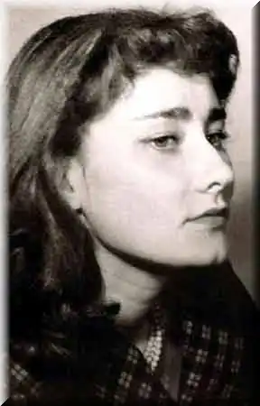
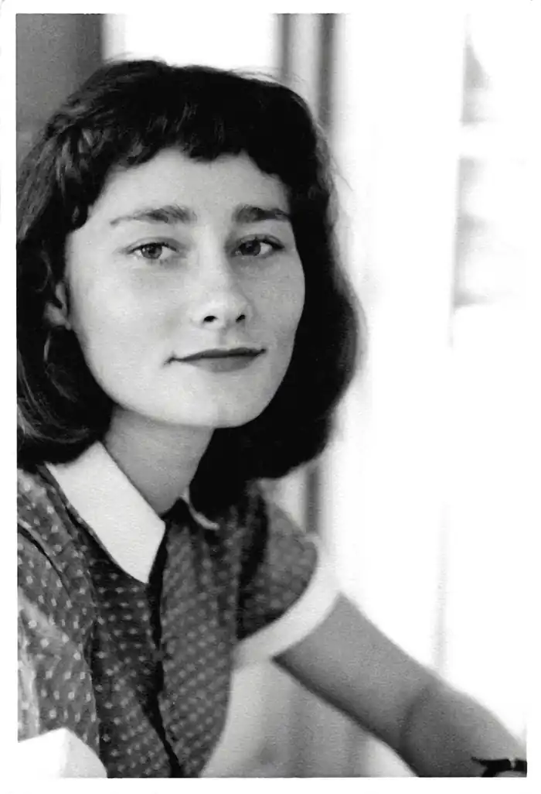

Галина Посвятовська (пол. Halina Poświatowska, за метрикою Helena Myga, 9 травня 1935, Ченстохова — 11 листопада 1967, Варшава) — польська поетеса.
Біографія
Народилася 1935 року в Ченстохові. Закінчила філологічний факультет Ягеллонського університету. 1955 року видала першу збірку віршів "Поганський гімн". У поезії спершу наслідувала А. Міцкевича і Ю. Словацького. Хворіла на серце, зробила першу операцію на серці в США. Встигла видати ще дві книжки: "Сьогоднішній день" (1965) та "Ода руками" (1965). 1967 року видала прозову книжку "Повість про приятеля". 1967 року, через тиждень після другої операції, померла. 1968 року вийшла її книжка "Ще один спогад". 1975 року з'явилося друком "Вибране". Протягом 1997—1998 року було опубліковане вибране зібрання творів та листів. Українські переклади Твори Галини Посвятовської українською мовою перекладали Світлана Жолоб, Олександра Лехицька, С. Шевченко, Анатолій Глущак, Володимир Гарматюк (автобіографічна повість "Розповідь для друга" (2013, Івано-Франківськ, Лілея-НВ; збірка оповідань "Знайомий з Котора", куди увійшли три оповідання: "Знайомий з Котора", "Американський записник", "Блакитний птах" (2015, Тернопіль, "Лілея").